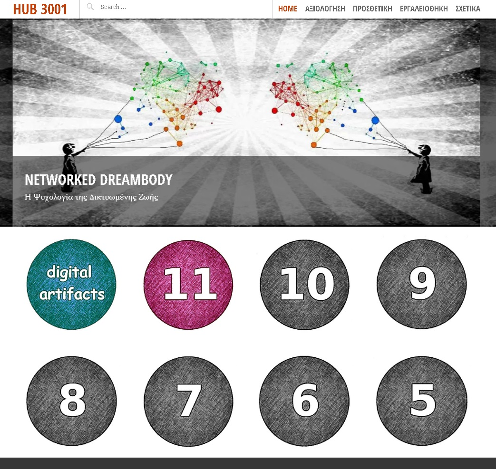
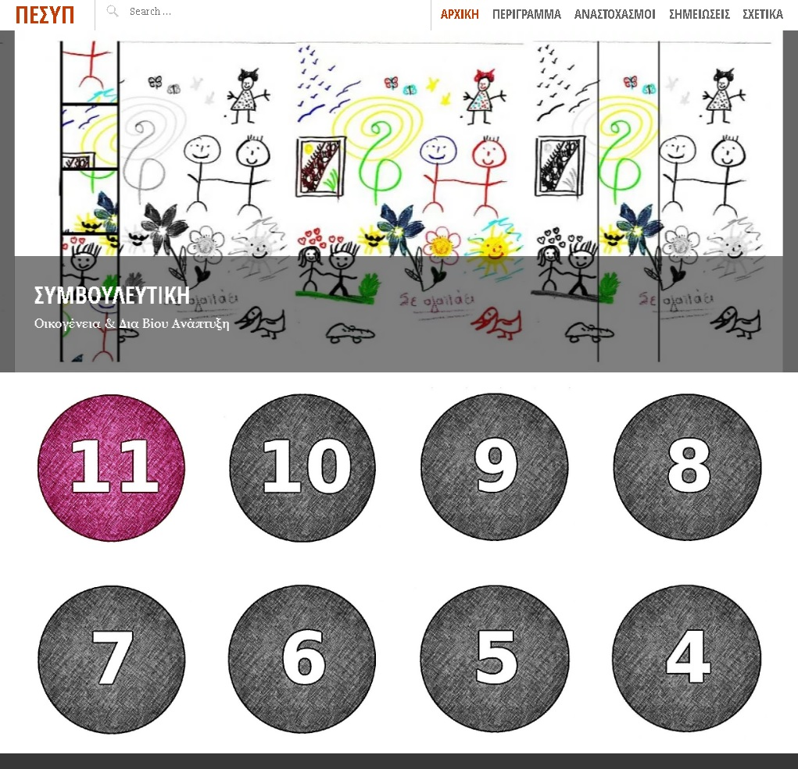
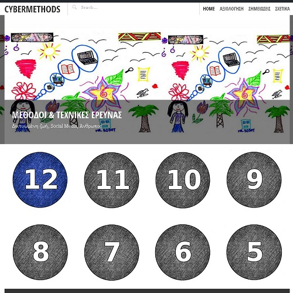
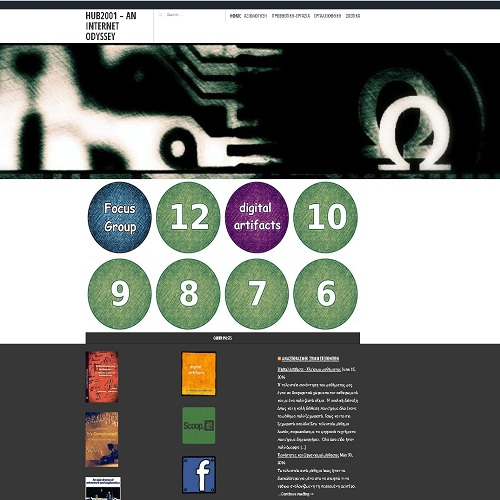
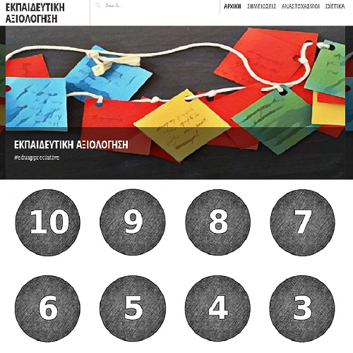
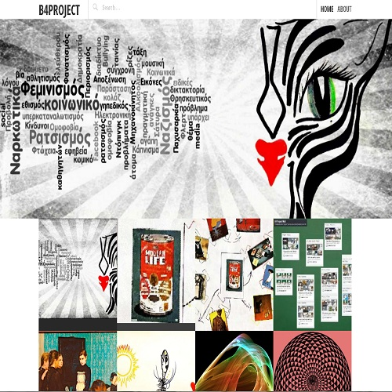
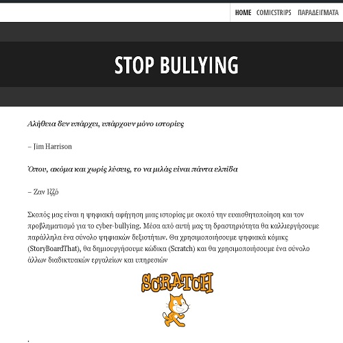
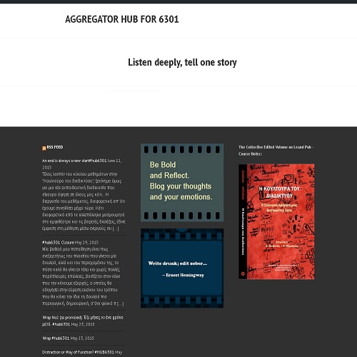
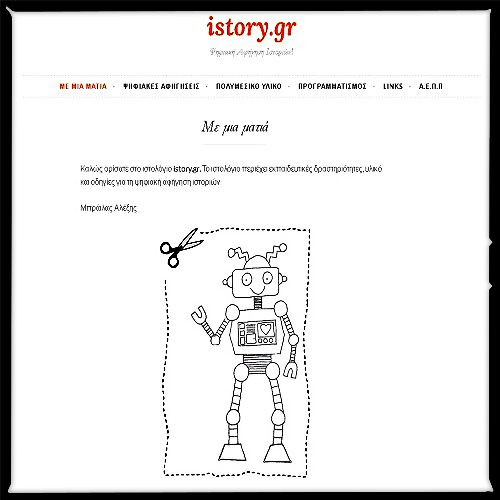

Teaching Portfolio

iCounseling (2017) - School of Pedagogical and Technological Education (ASPETE)

CyberMethods (2016) - Department of Psychology (Panteion University)

Hub2001 (2016) - Department of Psychology (Panteion University)

eduAppreciative (2016) - School of Pedagogical and Technological Education (ASPETE)

eduMethodology (2016) - School of Pedagogical and Technological Education (ASPETE)

b4Project (2015) - Secondary Education

Stop Bullying (2015) - Secondary Education

Hub6301 (2015) - Department of Psychology (Panteion University)

istory.gr (2014) - Secondary Education

Workshops:

More traditional e-Learning and blended learning sites:
Internet Culture, SocioPsychological approach (Eliademy) (2015, Panteion University)
A blended learning cource based on the principles of Experiential Learning: Research Methods in Cyberspace (Eliademy) (2014, Panteion University)
netpolis.gr (2013, Panteion University)
Κυβερνοπολιτική και Δυνητικές
Κοινότητες
Η Κουλτούρα του Διαδικτύου
GrPsychoNet (2012, Panteion University)
PoliticalSociology (2011, Panteion University)
PsyEpistimology (2010, University of Crete)
CulturalPsychology (2010, University of Crete)
Moodle LMS (2009, 2nd Lyceum Petroupolis)